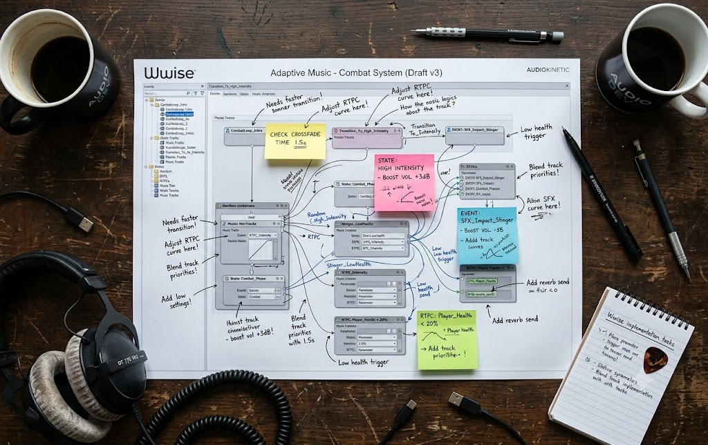

How I built 4 hours of adaptive music for Echoes of Veil
Adaptive audio is one of the most technically demanding disciplines in scoring. Here's how I approached building a 68-stem Wwise system that responds in real time to player state...